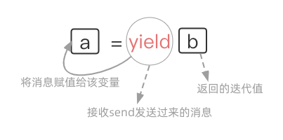

函数进阶

迭代器¶
迭代是什么¶
注意: 迭代 = 重复 + 每一次重复的结果作为下一次重复的初始值 ( 单纯的重复不是迭代 )
"""
★ --单纯的重复
"""
while True:
msg = input(">>: ").strip()
"""
★ --迭代
该程序中的while循环是一个迭代过程,不仅满足重复,而且每次重新赋值后的index值会作为下一次循环中新的索引进行取值,反复迭代,最终可以取尽列表中的值 -- 根据索引的方式迭代取值
"""
my_list = ["a","b","c"]
def iterator(item):
index = 0
while i < len(item):
print(item[index])
index += 1
iterator(my_list)
迭代器对象¶
一旦迭代器取干净, 再继续取就会抛出StopIteration异常
为什么需要迭代器?¶
Q: 为什么需要迭代器?
A: 只有 序列类型(列表、元祖、字符串)可以 依赖索引的方式 迭代取出其包含的元素.
但字典、集合、文件等 非序列类型是没有索引的 ,这些类型的数据也想迭代一个个的取出内部的元素.
所以需要找到 一种不依赖索引的迭代取值方式 -- 迭代器
别问obj.next()咋就取到迭代器中的值了呢？底层咋实现的俺也晓不得..要研究Cpython源码..莫纠结
iter()¶
可迭代对象 iterable: 内置有__iter__方法的对象 eg: 常见的容器(列表 元祖 字典 集合) 、字符串、文件
迭代器对象 iterator: 内置有__iter__和__next__方法的对象 eg: 文件
★ iterator一定是iterable,反之不一定.
可迭代对象执行 obj.__iter__() 返回的结果是一个迭代器对象
迭代器对象执行 obj.__iter__() 得到的是迭代器本身 (为了for循环能建立一种统一的标准)
迭代器对象执行 obj.__next__() 得到的是迭代器中的下一个值 注意哦！拿到了一个返回值！
ps: 像__开头, __结尾的魔法方法,我们一般不会直接使用的,因为python解释器会在满足某种条件下 自动调用！
dic = {'a': 1, 'b': 2, 'c': 3} # -- 字典,非序列类型的数据不能使用索引/下标
iter_dic = dic.__iter__() # -- dic.__iter__()等同于iter(dic)
while True:
try:
k = iter_dic.__next__() # -- iter_dic.__next__()等同于next(iter_dic)
print(dic[k])
except StopIteration: # -- 一旦迭代器取干净,再继续取就会抛出StopIteration异常(代表无值可取)
break
for循环原理¶
可以用for..in.. 简化实现迭代的过程
for循环工作过程如下:
大前提: in后面的对象一定要是个 可迭代对象
○ 执行in后对象的dic.__iter__()方法, 得到一个迭代器对象iter_dic
○ 执行next(iter_dic),将得到的值赋值给k,然后执行循环体代码
○ 重复过程2, 周而复始, 直到捕捉到StopIteration异常,结束迭代
list('abc')、tuple()、set()、sum() 等需要遍历的内置方法,其底层原理跟for循环类似
调用iterable的iter()方法...再next()..
# -- range()是一个可迭代对象;
# sum()底层是for循环的机制,会将range()这个Iterable变成Iterator!
# 内存里只会有一个值,内存是不会爆的! 就是要算很久..Hhhh
sum(range(1000000000))
迭代器优缺点¶
成也惰性计算,败也惰性计数..Hhh.
优点¶
1> 为序列和非序列类型提供了一种统一的迭代取值方式(可以不依赖索引)
2> 惰性计算/流式加载: 迭代器对象表示的是一个"数据流", Iterator对象可以被next()方法不断调用并返回下一个数据,直到没有数据时,抛出StopIteration的错误.. 但Iterator计算是惰性的, 只有在需要返回下一个数据时,它才会计算, 这意味着, 同一时间迭代器对象在内存之中只存在一个值, 因而可以存放无限大的数据流, eg 全体自然数. 而对于其他容器类如列表, 需要把所有的元素都存放于内存中, 受内存大小的限制, 可以存放的值的个数是有限的...
缺点¶
1> 除非取尽, 否则无法获取迭代器的长度.
换个说法,可以把这个Iterator数据流看作是一个有序序列,但我们不能提前获取序列的长度..
2> 迭代器的取值不如按照索引的方式灵活,只能往后走不能往前退, 不能特定取值
3> 它是 一次性的,迭代完就没了 , 迭代器产生后的唯一目标就是重复执行next方法直到值取尽, 否则就会停留在某个位置等待下一次调用next; 若是要再次迭代同个对象, 只能重新调用iter方法去创建一个新的迭代器对象; 若有两个或者多个循环使用同一个迭代器, 必然只会有一个循环能取到值...
"""train.txt
a
b
c
d
"""
# -- 验证迭代器是一次性的!!
f = open('train.txt','r',encoding='utf8') # -- 哪怕train.txt文件大小为10T,运行此行代码时都不会卡
# 文件是一个迭代器,默认会将文件按行分割以惰性加载
print(next(f)) # a/n -- 基于迭代器取值,next(f)每次只会取文件的一行数据
print(f.__next__()) # b/n
print(list(f)) # ['c\n', 'd']
print(list(f)) # []
生成器¶
参考文档:
https://www.qtmuniao.com/2019/11/03/python3-generator/
https://www.cnblogs.com/yssjun/p/10236126.html
https://www.zhihu.com/column/c_1189883314197168128
浅尝生成器¶
专业名词¶
若函数体包含yield关键字, 在调用函数时, 并不会执行函数体代码, 将会返回一个生成器对象.
准确来说: 根据上下文不同,生成器有对应的官方专业名词解释
| 名词 | 解释 |
|---|---|
| Generator Function | 含有 yield 关键字的 函数, 会返回一系列值, 可以使用 next () 对其返回值进行迭代. |
| Generator Iterator | generator function 返回的 对象 , 可以进行一次性地迭代. |
| Generator Expression | 生成器表达式. 通常使用小括号和 for 来定义. |
严格来说,使用了yield的函数严格来讲已经不是一个函数, 而是一个生成器. Generator Function只能通过yield将每次调用的结果返回给调用者!!
生成器内置有 __iter__ 和 __next__ 方法, 所以 生成器本身就是一种迭代器,它具备迭代器的一切特性
举例剖析¶
def fun(): # -- fun函数是Generator Function
print("I'm generator function.")
yield
print("Hello.")
g = fun() # -- g是Generator Iterator
print(g,type(g)) # <generator object fun at 0x7fd4a8d1bac0> <class 'generator'>
print("__iter__" in dir(g),"__next__" in dir(g)) # True True -- 生成器是迭代器
next()方法触发函数从上往下开始执行, 遇到yield关键字暂停, 拿到一个返回值 此处,拿到的返回值为None.
再执行next()方法, 会从上一次用next方法暂停/挂起的地方继续执行
所以接着会先打印 "Hello." 再往下,发现遇不到yield啦,此次的next()就拿不到返回值啦, 报错StopIteration
即 触发函数执行没有遇到yield则无值返回, 意味着取值完毕 ,迭代器无值可取, next()语句将抛出异常结束迭代
注意!! 是next(g)报错,不是函数体内容报错!!So, try..except..在函数体里使用没用, 应该对next(g)使用
"""
生成器函数每次执行到yield便会返回,与普通函数不同的是yield返回时会保留当前函数的执行状态,再次通过next()被调用时可以从中断的地方继续执行
"""
g.__next__() # 打印Hello.后 StopIteration报错
实际上, 在我们创建了一个generator后, 基本上永远不会调用next(), 而是 通过for循环来迭代取yield返回的值.
并且不需要关心StopIteration的错误, for循环会自动处理该异常.
def fun():
print("I'm generator function.")
yield
print("Hello.")
g = fun()
for iter_value in g:
print("iter_value:", iter_value)
"""
I'm generator function.
iter_value: None
Hello.
"""
生成器表达式:
生成器表达式就是将 列表推导式 中的 [] 改成 () 就可以了
>>> a = (i*i for i in range(10)) # -- a是Generator Expression
>>> type(a)
<class 'generator'>
# -- a比b节省了一次生成以一亿个元素的过程,所以耗时明显会比迭代器短
a = sum((i for i in range(100000000)))
b = sum([i for i in range(100000000)])
yield VS return¶
可以将yield浅看成return, 会返回值, 若不设置, 默认为None, 但yield不会结束函数
yield 是一个神奇的关键字, 遇到yield, 它会返回一个值, 并 临时挂起当前函数 , 记下其上下文 (包括局部变量、待决的 try catch 等), 将控制权返回给函数调用者.
当下一次使用 next()方法 去 Generator Iterator中取值 ( 即 调用其所在 generator function )时 , 会恢复保存的上下文, 继续执行剩下的语句, 直到再遇到 yield 或者退出为止..
以 yield 进行执行流控制的函数称为 generator function
return 会结束函数调用, 销毁上下文 (弹出栈帧/命名空间) , 将控制权返回给调用者
以return 进行执行流控制的函数 就是普通的 function
# -- python3中yield和return放一起不会报错,python2中会
>>> def fun():
yield 123
return 666
>>> g = fun()
>>> g.__next__()
123
next & send¶
首先调用 next 将函数运行至 yield后, 往后不论是next还是send都从挂起的yield处开始,从下一个yield处返回迭代值..
通过send方法去为上一次被挂起的yield语句赋值 , next也可以,不过传的是None值!
执行过程¶
next(g)等同于g.send(None)
通过for和next可以遍历生成器, 而send则可以用于向生成器函数发送消息
next和send均会触发Generator function的执行/均会去Generator Iterator中取值 yield挂起函数返回迭代值
1 def yield_func():
2 for i in range(1, 5):
# -- 注意点!!! 初次next(gen_func)时候遇到yield不会给x赋值,直接挂起函数返回迭代值了.
# 往后的next()会从此处开始执行,next(gen_func)相当于gen_func.send(None),会给x赋值None
3 x = yield i # -- i是yield返回的迭代值;
# yield接收的值对i是没有影响的,是yield接收,不是yield i接收!
4 print('yield_func', x)
5 gen_func = yield_func()
# -- next和send均会触发Generator function的执行/均会去Generator Iterator中取值
# -- next(g) 等同于 g.send(None)
6 print('iter result: %d' % next(gen_func)) # iter result: 1
7 print('iter result: %d' % next(gen_func)) # yield_func None
# iter result: 2
8 print('iter result: %d' % gen_func.send(100)) # yield_func 100
# iter result: 3
9 print('iter result: %d' % next(gen_func)) # yield_func None
# iter result: 4
10 print('iter result: %d' % next(gen_func)) # 抛出异常
代码结果分析如下:
line_no 5 调用Generator function "yield_func" 得到 Generator Iterator "gen_func"
line_no 6 使用next方法去gen_func这个迭代器中取值,此时才真正的开始执行yield_func定义的代码
line_no 3 执行到yield i,函数yield_func暂停执行并返回当前i的值1.
line_no 6 next(gen_func)得到函数yield_func执行到yield i返回的值1,输出结果iter result: 1
line_no 7 再次使用next方法去gen_func这个迭代器中取值,会从yield暂停执行的地方开始
line_no 3 next(gen_func) 等同于 gen_func.send(None);函数yield_func继续执行,所以x的值为None.
line_no 4 输出结果yield_func None
line_no 3 执行到yield i,函数yield_func暂停执行并返回当前i的值2.
line_no 7 next(gen_func)得到函数yield_func运行到yield i返回的值2,输出结果iter result: 2
line_no 8 执行gen_func.send(100);
line_no 3 函数yield_func继续执行,并将调用者send的值100赋值给x;
line_no 4 输出调用者send接收到的值;输出结果yield_func 100
line_no 3 执行到yield i,函数yield_func暂停执行并返回当前i的值3.
line_no 8 gen_func.send(100)得到函数yield_func运行到yield i返回的值2,输出结果iter result: 3
line_no 9 同理.略.
line_no 10 yield_func只会产生4个yield,yield只会返回4个迭代值
但是我们迭代调用了5次,会抛出异常StopIteration
yield表达式!!¶
需要首先调用 next 将函数运行至 yield 处, 才能通过
generator.send给 generator 传送对象, 除非generator.send(None) 否则报错!
在调用send方法之前, 还是先调用一次next方法为好, 这样较为规范..

In [1]: def eater():
...: print("Realy to eat.")
...: food_list = []
...: while True:
...: food = yield food_list
...: food_list.append(food)
...:
In [2]: g = eater()
In [3]: g.send('鸡')
---------------------------------------------------------------------------
TypeError Traceback (most recent call last)
<ipython-input-9-47324ef7a4ae> in <module>
----> 1 g.send('鸡')
# -- 无法将非None值发送到刚启动的生成器
TypeError: can't send non-None value to a just-started generator
In [4]: next(g)
Realy to eat.
Out[4]: []
In [5]: g.send('鸡')
Out[5]: ['鸡']
In [6]: g.send('鸭')
Out[6]: ['鸡', '鸭']
In [7]: next(g)
Out[7]: ['鸡', '鸭', None]
In [7]: g.send('鱼')
Out[7]: ['鸡', '鸭', None, '鱼']
扩展: 可以编写 装饰器 来提前将函数运行至 yield 处.. (这样的话生成器可以直接使用send)
def dec(fun):
def wrapper(*args, **kwargs):
g = fun()
next(g)
return g
return wrapper
@dec
def eater():
print("Realy to eat.")
food_list = []
while True:
food = yield food_list
food_list.append(food)
g = eater()
g.send('鸡') # -- 不需要先使用next啦
函数中有多个yield¶
>>> def func():
... a = yield 123
... print("a值为:", a)
... yield 456
... print('end')
...
>>> g = func()
>>> next(g)
123
>>> next(g)
a值为: None
456
>>> next(g)
end
Traceback (most recent call last):
File "<stdin>", line 1, in <module>
StopIteration
应用实例¶
斐波那契数列¶
Fibonacci数列的数学表达式 a , b = b , a + b
"""
★ --普通函数
"""
def func(index):
a, b = 0, 1
i = 0
print(a)
while i < index:
print(b)
a, b = b, a + b
i += 1
func(10)
"""
★ --生成器
"""
def func(index):
a, b = 0, 1
i = 0
print(a)
while i < index:
yield b
a, b = b, a + b
i += 1
for i in func(10):
print(i)
# --- 逻辑等同于
def fib():
a = b =1
yield a
yield b
while 1:
a , b = b , a+b
yield b
g = fib()
for num in fib():
if num > 10:break
print(num)
模拟linux监控文件¶
用yield生成器模拟Linux中命令:
tail -f file | grep python
动态实时检测warn.log中是否新增新的行, 若新增的行包含python,则会打印该行;
"""
注意程序只检测新增的日志信息!
当程序运行时,若warn.log文件中末尾有新增一行,且该行包含python,该行就会被打印出来
若打开warn.log时,末尾已经有了一行包含python,该行不会被打印,因为f.seek(0,2)移动到了文件EOF处
"""
def tail(f):
# -- 移动到文件的EOF最后
f.seek(0.2)
while 1:
# -- 读取文件中新的文本行
line = f.readline()
if not line: continue # -- 一直在等待文本输入,没有就跳过 [step3]
# -- yield 出每一行的数据
yield line # -- 若有文本输入,返回迭代值 [step4]
"""
>>> "abc" in "afadabcfg"
True
"""
def grep(lines, search_text):
for line in lines: # -- g_tail生成器开始运行 [step2]
if search_text in line:
yield line # -- 若其中包含python字符串,返回该行 [step5]
if __name__ == '__main__':
g_tail = tail(open('warn.log'))
g_grep = grep(g_tail, 'python')
for line in g_grep: # -- g_grep生成器开始运行 [step1]
print(line)
处理大文件¶
大文件(比如说 8G) , 但电脑内存只有4G
"""
★ --文本类型文件
文本本身就是迭代器
"""
with open('your_big_file.txt') as f:
for line in f:
do_someting(line)
"""
★ --其他类型文件
"""
def read_by_chunks(file, chunk_size=1024):
while True:
data = file.read(chunk_size)
if not data:
break
yield data
f = open('your_big_file.dat')
for chunk in read_by_chunks(f):
do_someting(chunk)
"""
★ --补充:统计a.txt文本文件中最长的行的长度
列表表达式是给你一大筐鸡蛋,里面的鸡蛋数是有限的,不然筐(内存)装不下;
生成器表达式是给你一只鸡,戳一下给你一个蛋,蛋的数量可以无限多.
"""
# -- 文本是一个迭代器,所以open打开文件时,不会将其全部加载进内存
# 使用for循环对文本遍历时,取出一行行的数据
# 下方使用列表生成式和生成器表达式最大的区别在于
# 结合max()函数后,产生的循环,前者有2次,后者只有一次 （前者存储列表数据还多占用一点内存).
# 前者2次: f文件的循环,data列表的循环 后者1次: f文件的循环
with open('a.txt','rt',encoding='utf-8') as f:
# data = [len(line) for line in f]
g = (len(line) for line in f)
print(max(g))
# -- 若放在这,虽然g是全局变量,但生成器代码里面有对f的循环,上下文里的f文件已经关闭了.会报错
# -- (如果是 print(max(data)),放在这就不会报错,因为列表数据都在内存里)
print(max(g))
yield生成器还有许多应用场景:
1> 用于简单的协程案例 -- 生成者消费者.
2> 遍历一个根目录下的所有文件并根据需要进行增删改查.
分析: 预先遍历且缓存结果, 但是目录下文件可能很多, 而且会动态改变; 如果不缓存, 多个地方可能会频繁的需要访问这一结果导致效率低下.. 这时候可以使用yield定义一个生成器函数
高阶函数¶
| 函数 | 功能 |
|---|---|
| map | 加工 |
| filter | 筛选 |
| reduce | 对可迭代对象的元素进行累积 |
| zip | 一一对应的'tuple' |
| enumerate | 下标和元素组成的'tuple' |
map、filter、zip、enumerate返回的都是迭代器对象. (注意, 它们返回的都不是生成器对象)
map、filter、reduce一般情况下,第一个参数是函数,第二个参数是iterable.
range(5)仅仅只是一个可迭代对象!!!
map取可迭代对象里的元素进行加工!不会对可迭代对象造成影响..元素是可变类型的时候要思考下!
>>> a = [[1,2,3]]
>>> list(map(lambda x:x.append(1),a))
[None]
>>> a # -- 依旧是引用语义!
[[1, 2, 3, 1]]
>>> list(map(str,a))
['[1, 2, 3, 1]']
>>> a
[[1, 2, 3, 1]]
map
list(map(str,[1,2,3])) # -- ['1', '2', '3']
x,y,z = map(str,range(3)) # -- "0" "1" "2"
list(map(list, zip(*[[1,2,3],[4,5,6]]))) # -- [[1,4],[2,5],[3,6]]
>>> a,b,c = map(str,sorted(x))
>>> a
'1'
>>> b
'2'
>>> c
'3'
filter
内置的filter()函数有两个参数
第一个参数可以是一个函数亦可以是None值
1> 若第一个参数是 函数, 则将第二个参数 可迭代数据 里的每一个元素作为函数的参数进行计算
把返回为True的值筛选出来;
2> 若第一个参数是 None值, 则直接将第二个参数中为True的值筛选出来.
reduce
reduce(function, iterable[, initializer])
function -- 函数,有两个参数
iterable -- 可迭代对象
initializer -- 可选, 初始参数
>>> from functools import reduce
>>> reduce(lambda x, y: x+y, [1,2,3,4,5],10)
25
# -- reduce计算1到11的阶乘
# -- 其实现过程就是 `a=1,b=2` —> `return a*b=2` —> `a = a*b = 2,b=3` 以此类推
In [15]: reduce(lambda a,b:a*b,range(1,11))
Out[15]: 3628800
递归¶
概念¶
递归是一种特殊的嵌套调用! 在调用一个函数的过程中,又直接或间接地调用了该函数本身.
递归有两个明确的阶段:
递推: 从外向里一层一层递归调用下去, 注意每进入下一层递归, 递归问题的规模必须有所减少
回溯: 从里向外开始一层一层回溯.
递归必须要有一个明确的结束条件,在满足该条件的时候,结束递推阶段,开始回溯..
递归的精髓在于通过不断地 重复 逼近一个最终的结果. 重复两字, 还会想到while循环, 递归能实现的while循环理论上都能干,但某些场景下递归实现会简单很多.
import sys
print(sys.getrecursionlimit()) # -- 默认允许的递归层数1000
sys.setrecursionlimit(3000) # -- 可以自己设置递归层数
"""
★ --直接调用
"""
def foo():
print('from foo')
foo() # -- 无限套娃
# -- 调用函数,就开辟一块命名空间,结束才会回收空间
# 在还未结束的函数里面又调用了该函数,又开辟了一块命名空间..如此往复,直到内存被撑爆.
# 官方文档: 每次递归调用都会有自己的本地命名空间
foo()
"""
★ --间接调用
"""
def bar():
foo()
def foo():
bar()
foo()
应用¶
经典案例:算年龄¶
后一个人始终比前一个人大2岁, 已知第一个人26岁, 求第n个人的年龄
"""
★ --递归算年龄
从上到下是递推过程 从下到上是依次return回溯过程(26+2+2+2+2)
age(5) -- return age(4) + 2
age(4) -- return age(3) + 2
age(3) -- return age(2) + 2
age(2) -- return age(1) + 2
age(1) -- return 26
执行age(5),想要age(5)的return语句完成执行,得先知道age(4)是多少与2运算后才能return吧?!
以此类推,直到得到了age(1)的值.
age(1)、age(2)...age(5)中的return语句才能依次完成执行!!
"""
def age(n):
if n == 1:
return 26
return age(n-1) +2
# -- 探讨 若将`return age(n-1) +2` 换成 `print(age(n-1) +2)`, 会发生什么？
# 因为没有写return语句,那么age(2)的返回值将是None
# 打印28后,会报TypeError的错误:'NoneType' and 'int'不能相加
# -- 探讨: 改写成`age(n - 1)`语句,会是怎样一个过程?
# age(5)要等age(4)运行完后才会释放空间,age(4)要得age(3)执行完后才会释放空间..以此类推
# 所以哪怕没写return语句,也是有回溯过程的..
# 只不过age(1)返回值26被age(2)接收后,age(2)返回给age(3)的值为None.
def age(n):
if n == 1:
return 26
age(n - 1)
# -- return None 这是一条隐形的语句
print(age(5)) # -- None
# -- 探讨: 改写成`return age(n - 1)`语句,会是怎样一个过程?
# -- age(1)return 26的返回值给了 age(2); age(3)再给age(4);最后26给到了age(5)
def age(n):
if n == 1:
return 26
return age(n - 1)
print(age(5)) # -- 26
取嵌套列表中的值¶
my_list = [1, [2, [3, [4, [5, [6]]]]]]
res = []
def tell(data):
for item in data:
if type(item) is list:
# -- 程序不断调用新的tell()递推下去,直到递归到tell([6])时,会返回None值,开始回溯
# -- 写不写这个return都不影响最后结果
return tell(item)
else:
res.append(item)
tell(my_list)
print(res) # -- [1, 2, 3, 4, 5, 6]
# -- 请分析下下方代码的实现过程.(当时自个儿是想如此解决,但感觉多此一举.)
my_list = [1, [2, [3, [4, [5, [6]]]]]]
res = []
def tell(data):
for item in data:
if type(item) is list:
for i in tell(item):
res.append(i)
else:
yield item
for i in tell(my_list):
res.append(i)
print(res) # -- [1, 2, 3, 4, 5, 6]
二分法¶
nums = [1, 3, 7, 11, 22, 44, 78, 111, 149, 435]
# -- 程序中写不写return都不会影响结果.
def num_find(nums, search_num):
mid_index = len(nums) // 2
'''
if mid_index == 0:
print('not exists.')
return
'''
# -- 若递推到后面,nums中只有一个元素,其nums[:0]、nums[1:]的值都将为[]
# -- 空列表再进行递推,对空列表下标取值会报索引越界的错误!!!
if mid_index != 0:
if nums[mid_index] > search_num:
# search_num in the left
return num_find(nums[:mid_index], search_num)
elif nums[mid_index] < search_num:
# search_num in the right
return num_find(nums[mid_index + 1:], search_num)
else:
# nums[mid_index] == search_num
print('find it.')
else:
print('not exists.')
num_find(nums, 10)